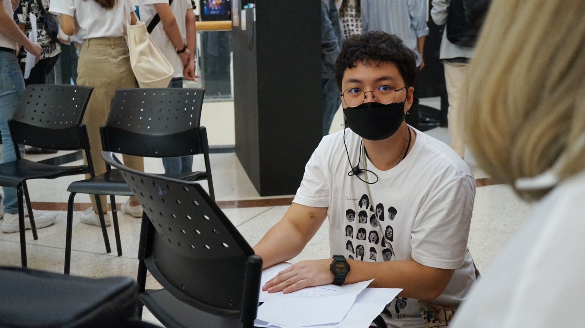

Summary
I am an enthusiastic UX Designer and a Web Developer
with background in 3D animation.
Education
Work Experience
Skills
- User Research
- UX Design
- Usability Testing
- HTML and CSS
- Storyboarding
- 3D Animation
- Video Editing
Accomplishments
-
Digicon6Asia, Thailand Gold Awards
- Our team won Thailand's Gold Award in 2023
for the short animated film
Haikei
-
Japanese Government Scholarship Recipient
-
I received Japanese Government Scholarship(MEXT) to study illustration in a specialized training college.